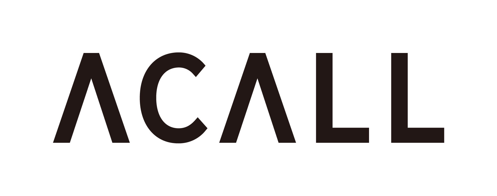

こんにちは世界！
5回目の Rails Girls Kobe が開催されます！
2日間のワークショップで、Ruby on Rails を使った Webアプリケーション作りを体験してみませんか？
ワークショップは無料です。
Hello world!
Rails Girls comes to Kobe again! During the free two-day workshop we'll dive into the magical world of Ruby on Rails!
概要
コーチにプログラミングのルールや Webアプリケーションの仕組みを教えてもらいながら、簡単なWebアプリケーションを作りを体験します。
必要なもの
自分のノートパソコン(WindowsでもMacでもOK!)と、やる気とキラリと光るイマジネーションを持ってきてください！
コーチとしてお手伝いいただける方を募集しています！
申し込みは締め切らせていただきました。
多数のお申し込み、ありがとうございました！
| 18:30開場 ～ |
インストール・ディまずは、参加者同士、お互いに知り合いになりましょう。ご自分のノートパソコンをお持ちください。 それぞれのパソコンにRubyとRailsをインストールし、Rubyプログラミングの最初の一歩をコーチとともに始めてみましょう。 |
|---|
| 9:30 - 10:30 |
レジストレーション、コーヒー土曜日にRuby on Railsのインストールトラブルがあれば、朝のうちに解決しておきましょう。 土曜日にすべてうまく行ったひとは参加しなくてもOKです。 |
|---|---|
| 10:30 - 10:40 |
開会一日の流れの説明。オーガナイザーから一言。 |
| 10:40 - 11:00 |
みんなで記者会見各テーブルで自己紹介をしていただきます。 |
| 11:00 - 12:00 |
ワークショップ |
| 12:00 - 13:00 | ランチ |
| 13:00 - 14:00 |
ワークショップ |
| 14:00- 14:30 |
ライトニングトークス |
| 14:30 - 15:30 |
ワークショップ |
| 15:30 - 15:40 |
コーヒーブレイク |
| 15:40 - 17:00 |
ワークショップ |
| 17:00 - 17:20 |
閉会 |
| 18:00 - 20:00 |
アフター・パーティ参加者、コーチ、スタッフによるパーティです。ワークショップで聞き損ねたことや RubyやRailsのこと、ステップアップの方法など、コーチに気軽に質問してみましょう。 |
参加費はどのくらいかかりますか？
無料です。申し込むときにはわくわくした気持ちだけあればいいです。
どのような人が参加するのでしょうか？
コンピュータを使ったことがある女性ならだれでも参加できます。
これまでに開催されたRails Girlsイベントには様々な年齢の女性がやってきました。
ご自分のノートパソコン(WindowsでもMacでもOK)をお持ちください。
男性も参加できますか？
参加できます。ただし、必ずウェブアプリを作りたがっている女性と一緒に参加してください。
申し込み人数が多い場合はお断りすることがありますので、ご了承ください。
参加申し込みは締め切らせていただきました。
多数のお申し込み、ありがとうございました！
次回開催のお知らせを受け取りたい場合は
こちら にご登録ください :)
日程:
2020年3月21日(土) 18:00 開場 ～ (順次開始)
2020年3月22日(日) 9:30 開場(10:30 開始) ～
会場:
120 WORKPLACE KOBE
各線三宮（三ノ宮）駅より徒歩８分
Rails Girls Kobe はご支援いただけるパートナーを募集しております。 こちらのフォーム からご応募ください。
Rails Girls Kobe は以下のすばらしいパートナーとの共同開催です。
 合同会社ファイブエッグス
は、神戸のRubyコミュニティ育ちの会社です。主にRuby on Railsを利用したWebアプリケーションを開発しています。
合同会社ファイブエッグス
は、神戸のRubyコミュニティ育ちの会社です。主にRuby on Railsを利用したWebアプリケーションを開発しています。
 合同会社ユーキューブ
は、神戸でWebコンサルティングや、Ruby on Railsを使ったシステムの受託開発をしています。
Railsを勉強しながら実務経験を積みたいという方に、タイミングによってはお仕事紹介できる可能性がありますのでお気軽にお声がけください。
合同会社ユーキューブ
は、神戸でWebコンサルティングや、Ruby on Railsを使ったシステムの受託開発をしています。
Railsを勉強しながら実務経験を積みたいという方に、タイミングによってはお仕事紹介できる可能性がありますのでお気軽にお声がけください。
 株式会社KURASERU
は、病院と介護施設のマッチングサービス ｢KURASERU｣を運営する神戸市注目のスタートアップです。
Ruby on Railsを用いて超高齢化社会となった日本最大の課題を解決したいエンジニアを募集中です！
株式会社KURASERU
は、病院と介護施設のマッチングサービス ｢KURASERU｣を運営する神戸市注目のスタートアップです。
Ruby on Railsを用いて超高齢化社会となった日本最大の課題を解決したいエンジニアを募集中です！
 ACALL株式会社 は、ACALLは、気持ちよく効率的に働き生産性を向上するため、オフィス内のさまざまなモノと人をつなぐスマートオフィスプラットフォームを提供しています。
 株式会社ソニックガーデン
は、お客さまのビジネスの成長をソフトウエアで支える「納品のない受託開発」を提供しています。
お客さまのパートナーとして ビジネスの立ち上げに必要なソフトウェアの 企画開発から運用まですべて請け負います。
株式会社ソニックガーデン
は、お客さまのビジネスの成長をソフトウエアで支える「納品のない受託開発」を提供しています。
お客さまのパートナーとして ビジネスの立ち上げに必要なソフトウェアの 企画開発から運用まですべて請け負います。
 Kobe.rb は神戸やその周辺のRubyistが集まる地域コミュニティです。神戸を中心に Ruby, Rails などの情報を共有したり、初心者フォローの勉強会を運営しています。隔週平日開催しています。Ruby, Railsなどで困ってる事を相談しあったりしたい人。Ruby初級者で勉強したい人などなど。ぜひこの場を活用してください。
Kobe.rb は神戸やその周辺のRubyistが集まる地域コミュニティです。神戸を中心に Ruby, Rails などの情報を共有したり、初心者フォローの勉強会を運営しています。隔週平日開催しています。Ruby, Railsなどで困ってる事を相談しあったりしたい人。Ruby初級者で勉強したい人などなど。ぜひこの場を活用してください。
 GMOペパボ株式会社「もっとおもしろくできる」を企業理念に、
レンタルサーバーサービス「ロリポップ！」や
国内最大のハンドメイドマーケット「minne」など様々なサービスを提供しています。
RubyやRailsを採用した開発環境で「いるだけで成長できる環境」をコンセプトにエンジニアの人材育成やコミュニティへの支援を積極的に行っています。
GMOペパボ株式会社「もっとおもしろくできる」を企業理念に、
レンタルサーバーサービス「ロリポップ！」や
国内最大のハンドメイドマーケット「minne」など様々なサービスを提供しています。
RubyやRailsを採用した開発環境で「いるだけで成長できる環境」をコンセプトにエンジニアの人材育成やコミュニティへの支援を積極的に行っています。
 クラッソーネは、「豊かな暮らしで人々を笑顔に」をミッションに掲げ、
家づくり分野でユーザー（施主様）とパートナー（建築工事会社）のマッチングサービス 「くらそうね」を展開しています。
現在、ユーザーが簡単に工事会社を比較でき、安心して工事を発注できる、解体工事マッチングプラットフォームを、
Ruby on Railsで開発しています。この新サービスを一緒につくっていただける仲間を募集中です。
クラッソーネは、「豊かな暮らしで人々を笑顔に」をミッションに掲げ、
家づくり分野でユーザー（施主様）とパートナー（建築工事会社）のマッチングサービス 「くらそうね」を展開しています。
現在、ユーザーが簡単に工事会社を比較でき、安心して工事を発注できる、解体工事マッチングプラットフォームを、
Ruby on Railsで開発しています。この新サービスを一緒につくっていただける仲間を募集中です。
 Sansan株式会社は、「出会いからイノベーションを生み出す」をミッションに掲げ、
法人向け名刺管理サービス「Sansan」と個人向け名刺アプリ「Eight」を提供しています。「Eight」はRuby on Railsで開発しており、
取り込んだ名刺から、いつでも活用できるあなただけのビジネスネットワークを構築することができます。
Rails Girlsでの皆さんとの「出会い」を楽しみにしています。
Sansan株式会社は、「出会いからイノベーションを生み出す」をミッションに掲げ、
法人向け名刺管理サービス「Sansan」と個人向け名刺アプリ「Eight」を提供しています。「Eight」はRuby on Railsで開発しており、
取り込んだ名刺から、いつでも活用できるあなただけのビジネスネットワークを構築することができます。
Rails Girlsでの皆さんとの「出会い」を楽しみにしています。
 株式会社SmartHR社会保険・労働保険それ自体はすばらしい制度ですが、
手続きの不便さ、煩雑さ、わかりづらさは否めません。私たちはこのアナログな領域を、
テクノロジーと創意工夫でもっとシンプル、かんたん、便利に変えていきます。
経営者は本業に、人事担当者は採用や制度づくりに集中でき、従業員はよりよい環境で安心して働くことができる社会を 私達は SmartHR で実現します。
株式会社SmartHR社会保険・労働保険それ自体はすばらしい制度ですが、
手続きの不便さ、煩雑さ、わかりづらさは否めません。私たちはこのアナログな領域を、
テクノロジーと創意工夫でもっとシンプル、かんたん、便利に変えていきます。
経営者は本業に、人事担当者は採用や制度づくりに集中でき、従業員はよりよい環境で安心して働くことができる社会を 私達は SmartHR で実現します。
 メドピアは現役医師が経営するヘルステックカンパニーです。
国内医師の3人に1人が参加するコミュニティサイトで医師を支援すると共に、医師や管理栄養士のネットワークを活かして一般向けのヘルスケアサービスを展開しています。
メドピアは現役医師が経営するヘルステックカンパニーです。
国内医師の3人に1人が参加するコミュニティサイトで医師を支援すると共に、医師や管理栄養士のネットワークを活かして一般向けのヘルスケアサービスを展開しています。
 株式会社アカツキは、心が求める活動がみんなの幸せの原動力となる世界「A Heart Driven World.」をビジョンとして掲げ、
エンターテインメントをグローバルに展開しています。 アカツキエンジニアは「テクノロジーを活用して、人の感情をもっと豊かに動かし、
ワクワクさせることができる」という信念のもとRubyなどのOSSを活用し、また積極的に貢献しています。
株式会社アカツキは、心が求める活動がみんなの幸せの原動力となる世界「A Heart Driven World.」をビジョンとして掲げ、
エンターテインメントをグローバルに展開しています。 アカツキエンジニアは「テクノロジーを活用して、人の感情をもっと豊かに動かし、
ワクワクさせることができる」という信念のもとRubyなどのOSSを活用し、また積極的に貢献しています。
 esa は、「情報を育てる」をコンセプトに作られた、自律的なチームのための情報共有サービスです。
日報や議事録、仕様書やマニュアル、アイデアの共有など様々な種類の情報共有に適しており、Markdownで書ける使い勝手のよいインターフェイスで、
チームのより良いコラボレーションをサポートします。
esa は、「情報を育てる」をコンセプトに作られた、自律的なチームのための情報共有サービスです。
日報や議事録、仕様書やマニュアル、アイデアの共有など様々な種類の情報共有に適しており、Markdownで書ける使い勝手のよいインターフェイスで、
チームのより良いコラボレーションをサポートします。
 リンクアンドモチベーションは、世界初の「モチベーション」にフォーカスした企業です。
これまでは組織人事コンサルティングや研修を提供する企業でしたが、これからは「すべての組織と個人の変革」に向けてテクノロジー企業に転換しようとしています。
この第二創業期を共に創って頂けるエンジニア・プロダクトマネジャー・デザイナーの方々を積極募集しています。
リンクアンドモチベーションは、世界初の「モチベーション」にフォーカスした企業です。
これまでは組織人事コンサルティングや研修を提供する企業でしたが、これからは「すべての組織と個人の変革」に向けてテクノロジー企業に転換しようとしています。
この第二創業期を共に創って頂けるエンジニア・プロダクトマネジャー・デザイナーの方々を積極募集しています。
 私たち永和システムマネジメントは
Ruby や Ruby on Railsを活用したアプリケーションをアジャイルに構築できる日本有数のソフトウェア受託企業です。
私たちはお客さまの投資を最大化すべく研鑽を続けています。また、Rubyコミュニティの支援も2006年から積極的に行っています。
私たち永和システムマネジメントは
Ruby や Ruby on Railsを活用したアプリケーションをアジャイルに構築できる日本有数のソフトウェア受託企業です。
私たちはお客さまの投資を最大化すべく研鑽を続けています。また、Rubyコミュニティの支援も2006年から積極的に行っています。
 GitHub はソフトウェアの共同開発をするための最高の環境を開発・提供しています。
1000 万人以上のユーザーが友だち、同僚、クラスメートと、時にはまったく知らない人とでさえ、コードなどを共有して素晴らしいプロジェクトを行っています。
GitHub はソフトウェアの共同開発をするための最高の環境を開発・提供しています。
1000 万人以上のユーザーが友だち、同僚、クラスメートと、時にはまったく知らない人とでさえ、コードなどを共有して素晴らしいプロジェクトを行っています。
 なかにしみゆき
なかにしみゆき  Mika Tanaka
Mika Tanaka Miyuki Higashi Organizer
@miiyukii
Miyuki Higashi Organizer
@miiyukii
 Aki
Aki